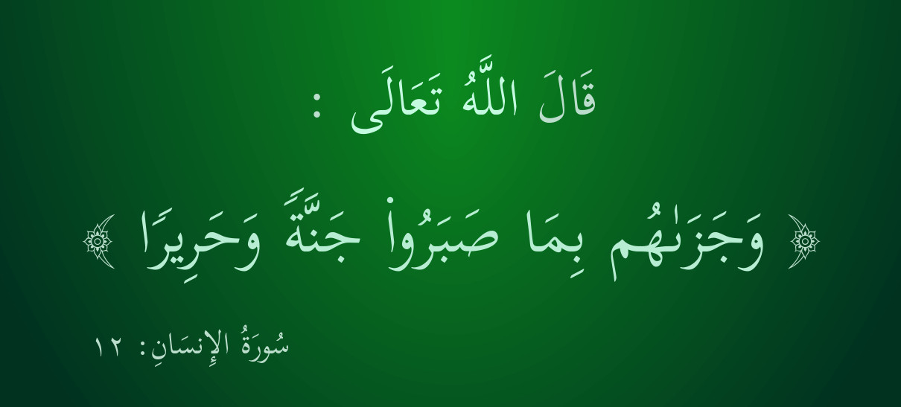

Зелёный шёлк
الحرير الأخضر
Green Silk
Для тех, кто придерживается единобожия, следуя за Мухаммадом, да благословит его Аллах и приветствует, по дороге, протоптанной сподвижниками.
Для тех, кто мудро придерживается исламской религии, исповедуя строгий монотеизм, следуя за благословенным Мухаммадом صلى الله عليه وسلم по прямой, широкой и ровной дороге, оставшейся от его сподвижников.
Для людей, которые мудро придерживаются строгого монотеизма, следуя за благословенным Мухаммадом صلى الله عليه وسلم по прямой дороге, протоптанной его сподвижниками رضوان الله عليهم .

Сказал Аллах Всевышний:
"И Он воздал им за то, что они терпели, садом (в Раю) и шёлком."
Сура 76 "Человек", аят 12.